Linux高性能服务器编程 第3章 TCP协议详解
文章目录
- TCP协议更靠近应用层，故在应用程序中有更强的可操作性，一些重要的socket选项都和TCP有关
- TCP主要包含以下几方面：
头部信息：出现在每个TCP报文段中，用于指定通信的源/目的端口号，管理TCP连接，控制两个方向的数据流状态转移过程：TCP连接的任意一端都是状态机，在TCP连接从建立到断开的过程中，两端状态机的状态发生变化数据流：通过分析数据流可从应用程序外部了解应用层协议和通信双方交换的应用数据。例如交互数据流、成块数据流数据流的控制：为保证可靠传输和提高通信质量，内核需控制TCP数据流，主要包括超时重传和拥塞控制
TCP服务的特点
- 传输层的协议主要有TCP和UDP，TCP相对于UDP的特点是：面向连接、字节流、可靠传输
面向连接：- TCP通信双方必须先
建立连接，并为该连接分配内核资源以管理连接状态和传输数据 - TCP连接是
全双工的，双方的数据读写可通过一个连接进行 - 完成数据交换后，通信双方都必须
断开连接并释放内核资源 - TCP的连接是
一对一的，故基于广播/多播的程序不可使用TCP服务，它们应使用无连接的UDP
- TCP通信双方必须先
字节流服务：- 发送端应用使用TCP连续多次写操作时，TCP模块将这些数据写入
TCP发送缓冲区，真正发送时将缓冲区中的数据封装为一个或多个TCP报文。即，TCP模块发送的报文数量与应用执行写操作的次数无关 - 接收端收到一个或多个TCP报文后，TCP模块将这些报文中的数据按序号写入
TCP接收缓冲区，并通知应用一次性读出或分批读出。即，TCP模块接收的报文数量与应*用执行读操作的次数无关 - 使用字节流服务的应用，其对数据的发送和接收没有边界限制
- 发送端应用使用TCP连续多次写操作时，TCP模块将这些数据写入
- 数据报服务（UDP）：
- 发送端程序每写一次，UDP模块将其封装为一个UDP数据报
- 接收端每收到一个UDP数据报，接收端应用都必须读一次（否则丢包）
- 若用户未指定足够的应用程序缓冲区来读取UDP数据，则数据被截断
可靠传输：- TCP使用
发送应答机制，发送端的每个TCP报文都必须得到接收方的应答才算传输成功 - TCP使用
超时重传机制，若发送一个TCP报文后规定时间内未收到应答则重新发送 - 接收端会对TCP报文进行
重排整理再交给应用层（因为IP协议没有顺序）
- TCP使用
- UDP提供不可靠服务（类似IP），需要上层协议处理数据确认和超时重传
- 图3.1和3.2是TCP的字节流服务和UDP的数据报服务的区别： 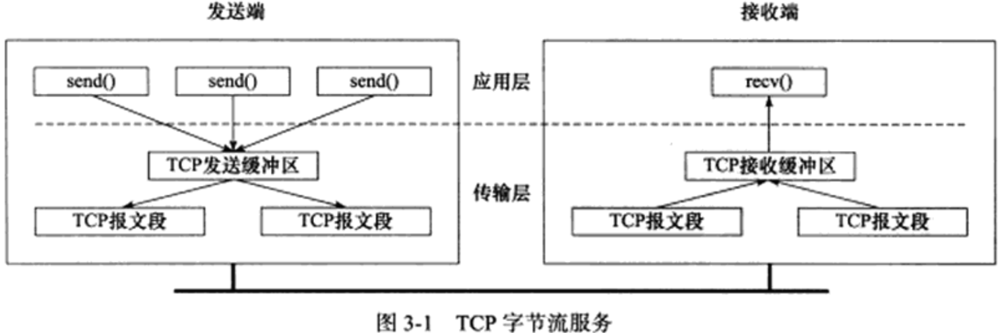 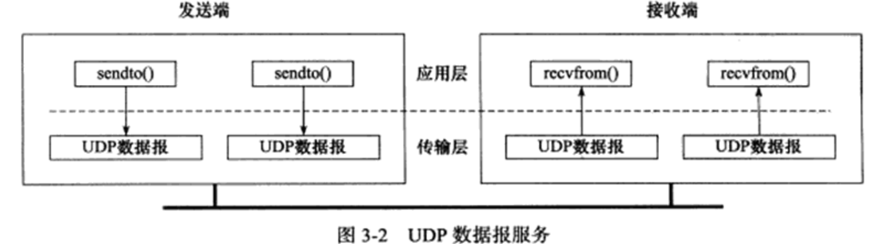
TCP头部结构
- TCP头部出现在每个TCP报文中，用于指定源端/目的端端口，管理TCP连接等
- TCP头部包括
固定头部结构和头部选项
TCP固定头部结构
- 固定头部结构如图3.3 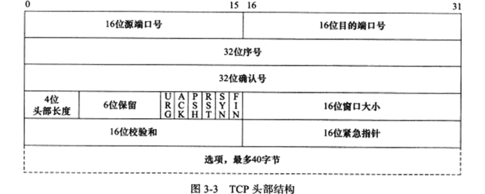
- 16位
端口号：源端口号和目的端口号- 客户端通常使用系统自动选择的临时端口号
- 服务器使用知名服务端口号，在文件
/etc/services中指定
- 32位
序号(seq)：一次TCP通信过程中某传输方向上字节流的编号，其值为流中第一个字节的初始序号加上该报文携带数据在整个数据流中的偏移。例如，A机给B机发送TCP报文，第一个报文的序号被初始化为随机ISN(Initial Sequence Number)，某次A机发给B的报文携带的数据是字节流中的第1025-2048字节，则该报文的序号是ISN+1025 - 32位
确认号(ack)：对另一方发来的TCP报文的响应，其值是收到的TCP报文的序号值+1。两机通信时发送的报文中同时携带自己的序号和对对方报文的确认号 - 4位
头部长度：标识该TCP头部有多少个32bit（4字节），因此TCP头部最长是60字节 - 6位
标志位：- URG：
紧急指针是否有效 - ACK：确认号是否有效。携带ACK标志的称为
确认报文 - PSH：接收端应立即从TCP接收缓冲区取走数据，为后面的数据预留空间
- RST：要求对方重新建立连接。携带RST标志的称为
复位报文 - SYN：请求建立连接。携带SYN标志的称为
同步报文 - FIN：通知对方本端要关闭连接。携带FIN标志的称为
结束报文
- URG：
- 16位
窗口大小：TCP流量控制的手段。该窗口指接收通告窗口(Receiver Window，RWND)，它告诉对方：本端TCP接收缓冲区还能容纳多少字节的数据。用于对方控制发送数据的速度 - 16位
校验和：包括TCP头部和数据部分的校验 - 16位
紧急指针：紧急指针字段和序号字段相加，结果是最后一个紧急数据的下一字节序号。TCP的紧急指针是发送端向接收端发送紧急数据的方法。
TCP头部选项
- 选项字段是变长的可选信息，该部分最多包括40字节（因为头部最长60字节，固定部分20字节）
- 选项字段：
- 1字节
kind字段说明选项类型 - 1字节
length字段指定该选项字段总长度（包括kind和length） - 可变长的
info字段是选项的具体信息
- 1字节
- 常见的TCP选项有7种，见图3.5 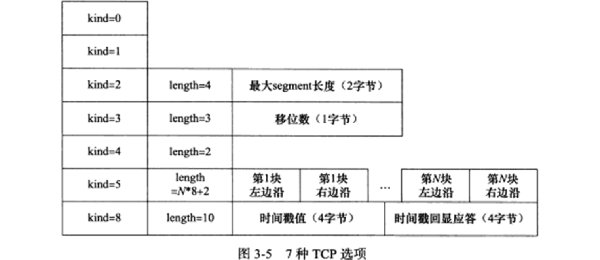
- kind=0代表选项表结束
- kind=1是空选项，一般用于将选项总长度填充为32bit的整数倍
- kind=2是
最大报文长度(Max Segment Size，MSS)选项- TCP连接初始化时，双方通过该选项来协商最大报文长度
- TCP通常将MSS设置为MTU减40字节（20字节是TCP头部，20字节是IP头部），尽量避免发出的IP数据报被分片。故以太网传输的MSS值通常是1460
- 该选项只能出现在同步报文中，否则被忽略
- kind=3是
窗口扩大因子选项- TCP头部的窗口大小字段只有16位，即最大为65535字节。但TCP允许的RWND大小远不止如此（为提高TCP的吞吐量）
- 窗口扩大因子代表向左的位移：假设头部的RWND大小是N，窗口扩大因子是M，则实际的RWND大小是N*(2^M)，即将N左移M位。
- 窗口扩大因子的取值范围是0-14，可通过修改内核变量
/proc/sys/net/ipv4/tcp_window_scaling来启用/关闭该选项 - 该选项只能出现在同步报文中，否则被忽略。但同步报文发送时该选项并未生效。该选项细节见RFC1323
- kind=4是
选择性确认(Selective Acknowledgement，SACK)选项- 若某个报文丢失，TCP默认重传最后被确认的报文后续的所有未确认报文，可能导致重复发送，降低性能
- SACK可使TCP模块仅重传丢失的报文，不用发送所有未被确认的报文
- 该选项在连接初始化时被确定是否支持
- 可通过内核变量
/proc/sys/net/ipv4/tcp_sack来启用/关闭该选项
- kind=5是SACK实际工作的选项
- 该选项告知发送方：本端已接收并缓存的不连续的数据块。可让发送端据此选择性重传丢失数据块。
- 每个块边沿参数包含4字节序号：
- 块左边沿表示不连续块的第一个数据的序号
- 块右边沿表示不连续块的最后一个数据的序号的下一个序号
- 一对左边沿和右边沿之间的数据是未收到的
- 一对块边沿占用8字节，故TCP头部选项中最多可包含4个这样的不连续数据块
- kind=8是
时间戳选项- 该选项提供较精确的计算通信双方之间
回路时间(Round Trip Time，RTT)的方法，为流量控制提供信息 - 可修改内核变量
/proc/sys/net/ipv4/tcp_timestamps来启用/关闭该选项
- 该选项提供较精确的计算通信双方之间
使用tcpdump观察TCP头部信息
- 在A机上使用telnet登陆到本机，并用tcpdump抓取第一个包
|
|
- tcpdump使用
-x输出数据包的二进制码，该输出有60字节：前20字节是IP头部，后40字节是TCP头部，此处没有应用程序数据 - 输出含义：
- Flag是[S]，表示该TCP报文含有SYN标志，即是同步报文。（若有其他标志，也会将首字母显示在Flag后的方括号）
- seq是序号值。这是A机发送的第一个报文，故该值即是本次连接中该方向上的ISN值。
- 该报文是发送的第一个报文，不用作确认，故ack为空
- win是RWND的大小，同步报文的win值反映实际的RWND大小（窗口扩大因子还未生效）
- options是TCP选项，具体内容在方括号中：
- mss是发送端通知的最大报文长度，ifconfig得知回环的MTU是65536，此处减了41字节防止被分片
- sackOK表示发送端支持并同意使用SACK选项
- TS val是发送端的时间戳
- ecr是时间戳回显应答，这是第一个报文，故针对对方时间戳的应答为0
- nop是空操作，用于填充对齐
- wscale指出发送端使用的窗口扩大因子，此处是7表明报文头部的RWND值左移7位是实际的RWND值
- 输出字节码中TCP头部信息见表3.1：

- 实验输出的源端口、序号、RWND大小、最大报文长度、时间戳、窗口扩大因子和表中不一致
- TCP报文段头部的二进制码和tcpdump输出的TCP报文描述信息完全对应
TCP连接的建立和关闭
使用tcpdump观察TCP连接的建立和关闭
- 在A机上telnet登陆到B机的80端口，并用tcpdump抓包
|
|
- 输出6个报文，前3个用于建立连接，后3个用于关闭连接（关闭连接应有4个，其中一个被省略）
- TCP建立和关闭连接的时序如图3.6： 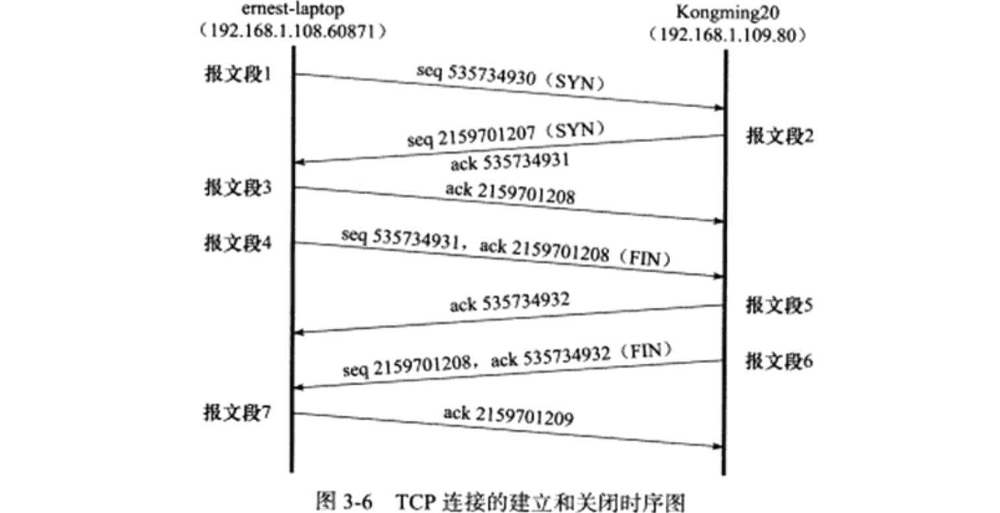
- 建立连接（
三次握手）：- 第1个报文包含SYN，是
同步报文，由A机向B机发起连接请求。同步报文虽然未携带数据但要占用一个序号值（故下一个发送的seq要+1） - 第2个报文包含SYN，是
同步报文，表示B机同意与A机建立连接，并将A机的seq值+1作为ack返回 - 第3个报文是对第2个同步报文的
确认
- 第1个报文包含SYN，是
- 从建立连接开始，tcpdump输出的seq和ack就都是相对ISN的偏移，也可用
-S选项来打印绝对值 - 关闭连接（
四次挥手）：- 第4个报文包含FIN，是
结束报文，由A机向B机发起结束请求。结束报文虽然未携带数据但要占用一个序号值 - 第5个报文（我的实验中被省略）用于
确认第4个报文的结束请求。该报文是否被省略，取决于TCP的延迟确认特性 - 第6个报文包含FIN，是
结束报文，由B机向A机发起结束请求（当第5个报文被省略时，该报文同时用于确认第4个报文的结束请求） - 第7个报文是对第6个结束报文的
确认
- 第4个报文包含FIN，是
- TCP连接一般由客户端发起，而可能由客户端关闭，也可能由服务器关闭。特殊情况是可能由两端同时发起或同时关闭
半关闭状态
- TCP是全双工连接，允许两个方向的数据传输被独立地关闭
半关闭状态：通信的一方可发送结束报文给对方，告诉它本端已完成了数据的发送。同时还允许接收对方的数据（并向对方发送确认报文），直到对方也发送结束报文关闭连接。如图3.7 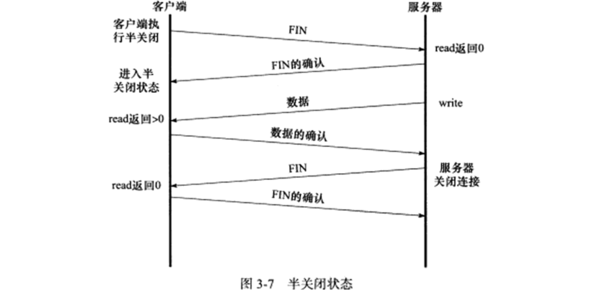- 上图中，客户端和服务器判断对方是否已关闭连接的方法是：
read系统调用返回0（收到结束报文）。linux还有其他的检测手段 - socket通过
shutdown函数提供了对半关闭的支持，虽然使用半关闭的程序很少见
连接超时
- 若服务器对客户端发送的TCP同步报文没有应答，则客户端会多次重连，若仍然无应答，会通知应用程序：连接超时
- 在A机上使用
iptables命令过滤所有连接请求（丢弃所有同步报文），然后在B机上用telnet登陆A机并抓包
|
|
- tcpdump不使用
-t即可保留时间戳 - 抓取的6个报文序号相同，说明后面5个都是超时重传
- 每个超时重传的时间是上一次的两倍，间隔时间分别是：1,2,4,8,16,…
- 超过
最多重连次数时放弃连接并通知应用程序。最多重连次数在内核变量/proc/sys/net/ipv4/tcp_syn_retries中定义
TCP状态转移
- TCP连接的双方是两个状态机，每台机器的当前状态可由
netstat命令查看 - 从建立到关闭的过程中两端状态转移见图3.8 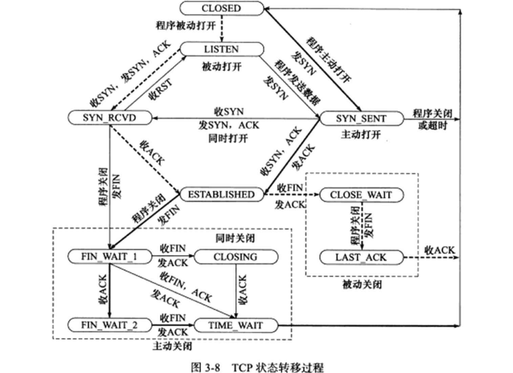
- 上图中虚线是典型的服务器端状态转移，实线是典型的客户端状态转移，
CLOSED是假想起点（虚拟状态）
TCP状态转移总图
- 典型的服务器状态转移：
- 通过listen系统调用进入
LISTEN状态，等待客户端连接（执行被动打开） - 一旦收到客户端的连接请求（同步报文）则将该连接放入内核等待队列，并向客户端发送确认报文。此时处于
SYN_RCVD状态 - 若服务器成功收到客户端发回的确认报文，则进入
ESTABLISHED状态，此时三次握手已建立 - 客户端主动关闭连接时（即通过close/shutdown系统调用向服务器发送结束报文），服务器发送确认报文并进入
CLOSE_WAIT状态，等待服务器应用程序关闭连接 - 通常服务器检测到客户端的结束报文后，也会给客户端发送结束报文以关闭连接，状态变为
LAST_ACK，等待客户端对结束报文的最后一次确认 - 服务器收到客户端最后一次的确认结束报文后，连接关闭，服务器处于
CLOSED状态
- 通过listen系统调用进入
- 典型的客户端状态转移：
- 客户端通过connect系统调用主动与服务器建立连接，connect首先给服务器发送同步报文，客户端进入
SYN_SENT状态- connect调用可能因为两个原因失败：
- 若connect的目标端口不存在（未被进程监听）或该端口被处于TIME_WAIT状态的连接占用，则服务器给客户端发送复位报文，connect调用失败
- 若connect的目标端口存在，但在超时时间内未收到服务器的确认报文，则connect调用失败
- connect调用失败会使客户端立即返回
CLOSED状态
- connect调用可能因为两个原因失败：
- 若客户端成功收到服务器的同步和确认报文，则connect调用成功，客户端发送确认报文并进入
ESTABLISHED状态 - 客户端主动关闭时，向服务器发送结束报文，此时客户端进入
FIN_WAIT_1状态- 若延迟确认未被开启，即图3.6的第5个报文未被省略，
- 客户端收到服务器专门用于确认客户端结束报文的确认报文后，客户端进入
FIN_WAIT_2状态，此时服务器处于CLOSE_WAIT状态，有可能发生半关闭 - 此时若服务器也向客户端发送结束报文关闭连接，则客户端给予确认并进入
TIME_WAIT状态
- 客户端收到服务器专门用于确认客户端结束报文的确认报文后，客户端进入
- 若延迟确认被开启，即图3.6的第5个报文被省略，则在收到服务器的“确认并结束”报文后，客户端发送确认报文，并直接进入
TIME_WAIT状态
- 若延迟确认未被开启，即图3.6的第5个报文未被省略，
- 客户端通过connect系统调用主动与服务器建立连接，connect首先给服务器发送同步报文，客户端进入
- 上述状态转移（图3.6的连接对应的状态转移）过程见图3.9： 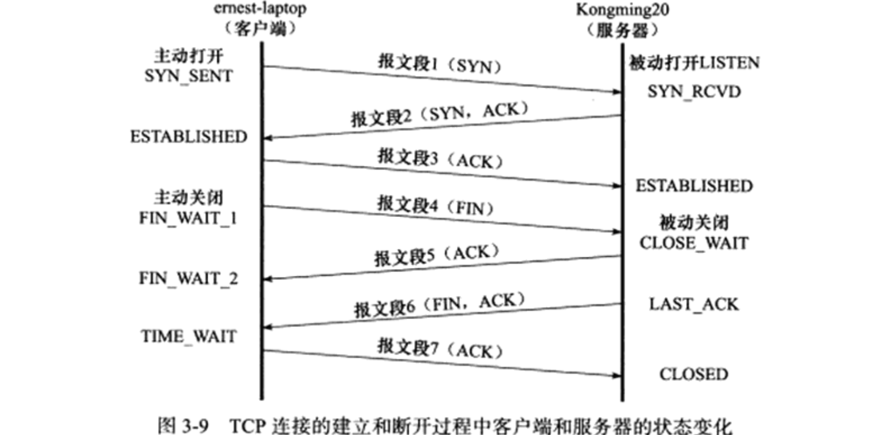
- 客户端处于FIN_WAIT_2状态时，需等待服务器发送结束报文，客户端才会进入TIME_WAIT，否则它一直停留在FIN_WAIT_2
- 有一种可能是：需要在半关闭状态下继续接收服务器的报文
- 另一种可能是：客户端半关闭后，未等到服务器关闭连接就强行退出了。此时客户端连接由内核接管，称为
孤儿连接（类似孤儿进程） - Linux为防止孤儿连接长期存在于内核中，定义了两个内核变量：
/proc/sys/net/ipv4/tcp_max_orphans指定内核能托管的孤儿连接数量/proc/sys/net/ipv4/tcp_fin_timeout指定孤儿连接在内核中的生存时间
TIME_WAIT状态
- 在四次挥手中，客户端收到服务器的结束报文后，不会直接进入CLOSED，而是进入TIME_WAIT状态
- 客户端在TIME_WAIT状态时，要等待一段长为2
MSL(Maximum Segment Life，报文最大生存时间)的时间才能关闭，其中MSL是TCP报文在网络中的最大生存时间，RFC1122建议MSL的时间是2min - TIME_WAIT存在的原因：
- 可靠地终止TCP连接。若四次挥手中最后一个报文（客户端对服务器结束报文的确认）丢失，则服务器会重发结束报文。此时客户端需停留在某状态以处理重复的结束报文。
- 一个TCP端口不能被多个连接同时打开，一个连接处于TIME_WAIT时无法使用该连接占用的端口建立新连接。若不存在TIME_WAIT则可以立刻建立刚才关闭的连接的
化身(incarnation，与原连接使用相同IP和端口号的新连接)，该化身可能收到属于原来连接的报文。 - TCP报文的最大生存时间是MSL，坚持2MSL的TIME_WAIT状态可确保网络中两方向上的报文都被接收（或因迟到被丢弃），因此新的化身可安全建立。
- 有时希望避免TIME_WAIT状态，例如需要立即重启程序时：
- 客户端一般不需要担心端口被占用，因为每次启动时都使用系统随机分配的端口，不会用到被占用的端口（除非手动指定）
- 服务器在主动关闭连接后异常终止，则进入TIME_WAIT将导致无法立即重启，因为服务器使用的端口是固定的知名端口
- 可通过socket选项
SO_REUSEADDR来强制进程立即使用处于TIME_WAIT状态的连接占用的端口
复位报文段
- 某些时候TCP连接的一段会向另一端发送携带RST标志的报文，即复位报文，通知对方关闭连接或重新建立连接
- 产生复位报文的3种情况：访问不存在的端口、异常终止连接、处理半打开连接
访问不存在的端口
- 客户端访问不存在的服务器端口时，服务器将给客户端发送复位报文
- 从B机执行telnet登陆到A机的不存在的54321端口，并用tcpdump抓包
|
|
- 输出显示telnet连接被拒绝，抓包可见服务器返回的报文Flags为R，即复位报文
- 复位报文的RWND大小为0，故收到复位报文的一端应关闭连接或重连，不应回复该报文
- 客户端向服务器的某端口发起连接而该端口处于TIME_WAIT时，客户端也将收到复位报文
异常终止连接
- 异常地终止一个TCP连接的方法：给对方发送复位报文。一旦发送了复位报文，发送端所有排队等待发送的数据都被丢弃
- 应用程序可使用socket选项SO_LINGER来发送复位报文，来异常终止一个连接
处理半打开连接
- 当一方（B）关闭或异常终止连接，而另一方（A）未收到结束报文（例如断网了），此时A还维持原来的连接，而B即使重启也没有保持原连接的任何信息。此时是半打开状态，这种状态的连接叫
半打开连接。若A向半打开的连接写入数据，则B将回复复位报文以关闭连接 - 操作：
- 在B机上监听12345端口并用telnet抓包，在A机上用telnet登陆到B机的12345端口
- 拔掉A机网线，重启B机的服务器程序，插上A机网线
- A机的telnet并未退出，处于半打开状态，向其中输入一个任意字符，会导致A机的telnet被服务器关闭
|
|
- 上面的输出：
- 前3个报文是建立TCP时的三次握手
- 第4个报文由客户端发给服务器，携带了3字节的应用程序数据，是用户输入的字符’a’、回车’\r’、换行’\n’
- 第5个报文是服务器发给客户端的复位报文，使客户端关闭连接
TCP交互数据流
- TCP报文携带的应用程序数据按长度分为两种：
交互数据很短，使用交互数据的程序对实时性要求高，如telnet、ssh等成块数据长度通常为TCP报文允许的最大数据长度，使用成块数据的程序对传输效率要求高，如ftp等
- 在A机上telnet登陆到本机并执行ls命令，用tcpdump抓包：
|
|
- 整个登陆过程中产生大量报文，这里只选择登陆成功之后的报文：
|
|
- 输出：
- 第1-4行是输入字符’l’的过程：
- 第1行是客户端发送给服务器，数据长度为1，携带字符’l’的应用程序数据
- 第2行是服务器对第1行报文的确认，数据长度为0
- 第3行是服务器发送给客户端，数据长度为1，携带字符’l’的应用程序数据，用于回显字符’l’
- 第4行是客户端对第3行报文的确认，数据长度为0
- 第5-8行是输入字符’s’的过程
- 第9-11行是输入回车符’\n’和流结束符EOF的过程：
- 第9行是客户端发送给服务器，数据长度为2，携带回车符’\n’和流结束符EOF
- 第10行是服务器对第9行报文的确认，并携带2个字节的数据，传回回车符和换行符
- 第11行是客户端对第10行报文的确认
- 第12-13行是服务器对ls命令的回显：
- 第12行是服务器发送给客户端，携带175个字节表示ls命令的输出
- 第13行是客户端对第12行的确认
- 第14行是服务器发送给客户端，携带21个字节，包括：一个回车符、一个换行符、客户端登陆用户的PS1环境变量
- 第1-4行是输入字符’l’的过程：
- 关于报文携带的数据，可在tcpdump中开启
-x来显示报文的16进制，然后将数据部分转为字符串：
|
|
延迟确认：对于收到的报文并不立即确认，而是查看本端是否由数据需要发送给对方，若有则和确认信息一起发出（例如图3.6中被省略的报文5，是TCP建立/断开连接时发生的延迟确认）- 使用延时确认可减少TCP报文的数量
- 对于交互数据流，如telnet程序：
- 在本机和局域网上，由于用户的输入速度显著慢于程序的处理速度，故客户端的确认报文总是可以不携带任何应用数据
- 在广域网上，交互数据流可能有很大的延时，且携带交互数据的微小报文一般很多（按一个键就有几个报文），可能导致拥塞发生
- 解决广域网交互数据流报文太多导致拥塞的方法之一是
Nagle算法：- 一个TCP连接的双方在任意时刻都最多只能发送一个未被确认的报文，在该报文被确认前不能发送下一个报文
- 发送方在等待确认的同时收集本端需发送的微小数据，在确认到来时以一个报文将这些小数据一次发出
- 该算法可极大的减少网络中微小TCP报文的数量，且是自适应的：确认到达越快，数据发送得越快
TCP成块数据流
- 在B机启动vsftpd服务器，在A机执行ftp登陆并使用get下载一个大文件，tcpdump抓包：
|
|
- 只选最后几个输出：
|
|
- 输出中：
- 服务器连续发送1-2行报文，得到客户端的第3行确认报文（ack），该确认报文同时说明客户端还可接收23620*(2^7)字节
- 服务器连续发送4-7行报文，得到客户端的第8行确认报文（ack），该确认报文同时说明客户端还可接收23588*(2^7)字节
- 7-10行是标准的四次挥手：
- 第7行服务器主动要求关闭连接（F），并通知客户端尽快取走数据（P）
- 第8行客户端对第7行报文确认
- 第9行客户端要求关闭连接（F）
- 第10行服务器对第9行报文确认
- 传输大量数据时，发送方会连续发送多个TCP报文，接收方可
一次确认所有这些报文 - 在发送方收到一次接收方的确认后，还能连续发送多少个报文，是由接收方的RWND和CWND大小决定。接收方RWND越大，发送方可连续发送的报文内容越多（但实际上发送方也不会一次发送那么多）
- 有时服务器会每隔几个报文就发送一个PSH标志（Flags为P）通知客户端尽快读取数据。但这并非必须，因为它可从客户端确认报文中得知客户端还能接收多少数据（RWND不为0）
带外数据
- 带外数据：
- 某些传输层协议有
带外(Out Of Bound，OOB)数据，用于迅速通知对方本端发生的重要事件 - 带外数据比普通数据（也称带内数据）优先级更高，应该总是被立即发送，无论发送缓冲区中是否有数据在排队
- 带外数据的传输可用一条独立的传输层连接，也可在普通数据的连接中传输
- 带外数据的使用很少，仅有telnet、ftp等远程非活跃程序
- 某些传输层协议有
- UDP没有带外数据，TCP也没有真正的带外数据
- TCP使用头部的紧急指针标志和紧急指针两个字段给程序提法了紧急方式，它利用传输普通数据的连接来传输紧急数据（带外数据）
- TCP发送带外数据：
- 如图3.10，发送缓冲区中已有N字节数据，又向其中写入3字节带外数据"abc” 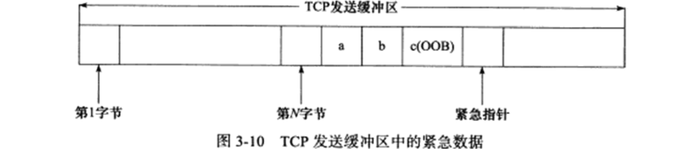
- 紧急指针指向最后一个带外数据的下一字节，即’c’之后的位置
- 多字节带外数据中，只有最后一字节被当作带外数据，其他被当作普通数据
- 发送缓冲区产生的每个报文都被设置URG标志，且紧急指针指向同一位置，但只有一个报文真正携带带外数据
- TCP接收带外数据：
- 接收端只在看到紧急指针标志时才检查紧急指针，根据其所指位置确定带外数据的位置
- 将带外数据读入特殊的
带外缓存中，该缓存只有1字节 - 若应用程序未及时从带外缓存中取走带外数据，后续带外数据会覆盖带外缓存
- 若给TCP连接设置了SO_OOBINLINE选项，则带外数据和普通数据一样被存放在TCP接收缓冲区中，应用程序根据紧急指针所指位置得到带外数据的位置
TCP超时重传
- TCP模块为每个报文都维护一个
重传定时器，该定时器在该报文第一次发送时启动，若超时时间内未收到对方应答，则重传该报文并重置定时器 - 下次重传的超时时间如何选择、最多执行多少次重传，取决于重传策略
- 在A机上启动iperf服务器，在B机上telnet登陆到A机的该服务器并用tcpdump抓包，从telnet客户端发送一些数据，拔掉服务器网线再从客户端发送数据
iperf是测量网络状况的工具，-s是作为服务器运行，iperf默认监听5001端口并丢弃接收到的所有数据
|
|
- 抓包输出：
|
|
- 输出：
- 1-3行是三次握手
- 4-5行是客户端发送"1234"并得到服务器确认
- 6行是客户端尝试发送"12”
- 7-12行是客户端重传第6行报文
- 每次
超时重传的间隔时间都是上次重传间隔时间的2倍，类似超时重连 - 若超时重传次数超过最大允许次数，可能会使底层IP和ARP接管，查询对方的MAC地址，直到客户端放弃连接
- 与TCP超时重传相关的内核参数：
/proc/sys/net/ipv4/tcp_retries1指定在底层IP接管前TCP最少重传的次数，默认为3/proc/sys/net/ipv4/tcp_retries2指定放弃连接前TCP最多重传的次数，默认为15（一般是13-30min）
- 虽然超时会导致TCP报文重传，但报文重传可发生在超时之前，即
快速重传
拥塞控制
拥塞控制概述
- 拥塞控制目的：提高网络利用率、降低丢包率、保证网络资源对每条数据流的公平
- TCP拥塞控制的标准文档是RFC5681，包括4部分：
慢启动、拥塞避免、快速重传、快速恢复 - 拥塞控制算法在Linux下有多种实现：
reno算法、vegas算法、cubic算法等，它们部分或全部地实现了RFC5681的4隔部分。在/proc/sys/net/ipv4/tcp_congestion_control中指明当前使用的算法 - 拥塞控制的最终受控变量是SWND：
SWND(Send Window，发送窗口)是发送端向网络一次连续写入（在收到第一个数据的确认之前）的数据量- 发送端最终以TCP报文来发送数据，故SWND也限制了发送端能连续发送的报文数
- 一次连续发送的TCP报文中，每个报文的数据部分的最大长度称为
SMSS(Sender Maximum Segment Size，发送者最大段大小)，其值一般等于MSS
- 合理选择SWND的大小：
- SWND太小会引起明显的网络延迟，SWND太大易造成网络拥塞
- 接收方可通过其RWND来控制发送端的SWND，但这不够
- 发送端引入状态变量
CWND(Congestion Window，拥塞窗口)，实际的SWND=min{RWND,CWND}
- 拥塞控制的输入输出见图3.11，它是一个闭环反馈控制 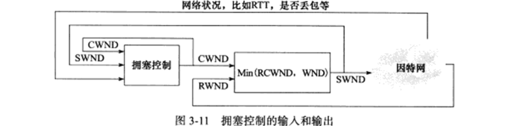
慢启动和拥塞避免
慢启动：- 连接建立时，CWND设置为初始值
IW(Initial Window)，其值为2-4个SMSS，该值在新的Linux内核中被提高，以减小传输滞后 - 连接建立后，发送端每收到接收端的一个确认，其CWND就增加，规律是
CWND+=min{N,SMSS}，其中N是此次确认中包含的之前未被确认的字节数 - 上述步骤使得CWND在连接建立之初按照指数增长
- 慢启动的理由是，TCP模块刚开始发送数据时并不知道网络的状况，需用试探方式平滑增加CWND大小
- 慢启动实际不慢，若不施加其他限制，慢启动会使CWND很快膨胀
- 为限制慢启动中CWND的增加速度，定义状态变量
ssthresh(slow start threshold size，慢启动门限)，当CWND大小超过该值时，进入拥塞避免
- 连接建立时，CWND设置为初始值
拥塞避免：- 拥塞避免算法使得CWND依线性增长，减缓其扩大
- RFC5681提到两种拥塞避免的实现：
- 每个RTT时间内按照
CWND+=min{N,SMSS}计算新的CWND，无论该RTT时间内发送端收到多少确认 - 每收到一个新数据的确认，就按照
CWND+=SMSS*SMSS/CWND来更新CWND
- 每个RTT时间内按照
- 图3.12描述了慢启动和拥塞避免发生的时机和区别（以SMSS为单位来显示CWND，以次数为单位显示RTT）： 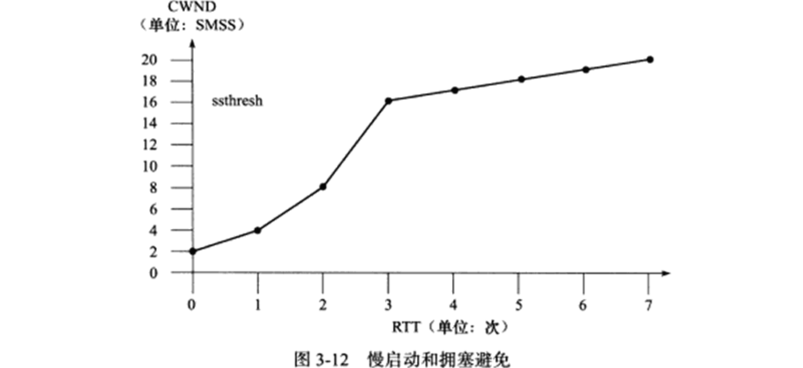
- 发送端未检测到拥塞时使用慢启动和拥塞避免来避免拥塞，检测到拥塞时使用快速重传和快速恢复
- 发送端判断拥塞发生的依据有2个：
传输超时（重传定时器溢出），处理方式：仍使用慢启动和拥塞避免，只是调整为ssthresh=max{FlightSize/2,2*SMSS},CWND<=SMSS，其中FlightSize是已发送但未收到确认的字节数。这样调整后CWND将会小于SMSS，故也小于ssthresh，故再次进入慢启动阶段收到重复的确认报文，处理方式：使用快速重传和快速恢复- 若在传输超时后又收到重复的确认，则也被当成传输超时处理
快速重传和快速恢复
- 很多时候发送端都可能收到重复的确认报文，例如：报文丢失、接收端收到乱序的报文并重排等
- 拥塞控制算法需判断收到重复的确认报文时，网络是否真的发生了拥塞（报文是否真的丢失）。方法：若发送端
连续收到3个重复的确认报文，则认为拥塞真的发生，将启用快速重传和快速恢复 快速重传和快速恢复：- 收到第3个重复确认报文时，按照
ssthresh=max{FlightSize/2,2*SMSS}计算ssthresh，并立即重传丢失报文，按照CWND=ssthresh+3*SMSS设置CWND - 每次收到一个重复确认时，设置
CWND+=SMSS，此时发送端可发送新的报文 - 收到新数据的确认时，设置
CWND=ssthresh，其中ssthresh是新的慢启动门限，在第1步中计算
- 收到第3个重复确认报文时，按照
- 快速重传和快速恢复后，拥塞控制将恢复到拥塞避免阶段